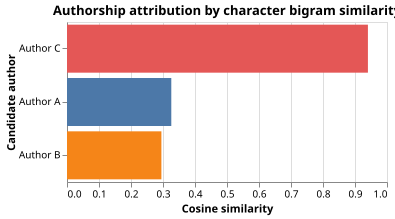

Authorship Attribution by N-gram Profiles
The Problem
- Authorship attribution asks, "Given an anonymous text and a set of candidate authors, whose writing style does the text most resemble?"
- Applications include forensic linguistics (disputed documents, plagiarism detection) and literary studies (anonymous or pseudonymous works)
- Style is captured not by vocabulary choices but by low-level character patterns: how often certain pairs or triples of characters appear together
- The approach here:
- Generate a synthetic corpus of short texts in which each author uses a distinct set of characters with higher frequency
- Build a character n-gram profile for each author from training texts
- Attribute each test text to the author whose profile is most similar, using cosine similarity as the distance measure
Why are character n-grams more reliable for authorship attribution than word frequency profiles?
- Because character n-grams are always more frequent than words.
- Wrong: character n-grams are shorter sequences and can be more frequent in raw count terms, but that is not why they are preferred for attribution.
- Because character n-grams capture unconscious stylistic habits such as
- punctuation, spacing, and morpheme preferences that are harder to alter than
- word choice.
- Correct: authors may deliberately vary vocabulary to avoid detection, but character-level patterns are more deeply habitual and change less consciously.
- Because word frequency profiles require labeled training data.
- Wrong: both word frequency profiles and character n-gram profiles are built from raw (unlabeled) text; no class labels are needed.
- Because character n-grams are language-independent.
- Wrong: although n-grams can be applied across languages, this is not the reason they outperform word profiles for single-language attribution tasks.
Character N-gram Profiles
- A character n-gram is a sequence of $n$ consecutive characters in a text
- Spaces and punctuation are treated as characters so that word-boundary patterns are captured
- For a text of length $L$ characters there are $L - n + 1$ overlapping n-grams
- The profile for an author is the relative frequency of each n-gram across all their training texts
$$p(ng) = \frac{\text{count}(ng)}{\sum_{ng'} \text{count}(ng')}$$
- The profile is a probability distribution over the set of observed n-grams
Cosine Similarity
- Given two profiles $\mathbf{p}A$ and $\mathbf{p}_B$ (treated as vectors indexed by n-gram), with $|\mathbf{p}| = \sqrt{\sum$, the cosine similarity is:} p(ng)^2
$$\text{sim}(A, B) = \frac{\sum_{ng} p_A(ng)\, p_B(ng)}{\|\mathbf{p}_A\|\;\|\mathbf{p}_B\|}$$
- Cosine similarity ranges from 0 (no shared n-grams) to 1 (identical profiles)
- Dividing by the norms makes the measure length-independent: a short text and a long text with the same relative frequencies score 1
Profile A has bigrams "ab" with frequency 0.6 and "cd" with frequency 0.8 (it contains no other bigrams, and the two frequencies form a unit vector). Profile B has "ab" with frequency 0.8 and "cd" with frequency 0.6. What is the cosine similarity of A and B?
Generating Synthetic Texts
- The 15-character alphabet "abcdefghijklmno" is divided into three equal groups of five
- Each author favors one group
- Characters from the preferred group are sampled five times more often than characters from the other groups, producing clearly separable profiles
- Words are random strings of 3 to 6 characters
- texts contain 150 words
- The last of the four texts per author serves as the held-out test text
def make_corpus(
authors=AUTHORS,
chars=CHARS,
preferred_weight=PREFERRED_WEIGHT,
other_weight=OTHER_WEIGHT,
chars_per_author=CHARS_PER_AUTHOR,
word_length_min=WORD_LENGTH_MIN,
word_length_max=WORD_LENGTH_MAX,
words_per_text=WORDS_PER_TEXT,
texts_per_author=TEXTS_PER_AUTHOR,
seed=SEED,
):
"""Return a Polars DataFrame with columns author, text_id, role, text.
role is 'train' for the first texts_per_author-1 texts per author and
'test' for the last. Each text is a space-separated sequence of synthetic
words; each author's words are biased toward their preferred character set
so that character n-gram profiles are clearly distinct between authors.
"""
rng = np.random.default_rng(seed)
n_chars = len(chars)
records = []
text_id = 0
for a_idx, author in enumerate(authors):
probs = np.full(n_chars, other_weight)
start = a_idx * chars_per_author
end = start + chars_per_author
probs[start:end] = preferred_weight
probs /= probs.sum()
for t_idx in range(texts_per_author):
words = []
for _ in range(words_per_text):
length = int(rng.integers(word_length_min, word_length_max + 1))
word = "".join(
chars[int(rng.choice(n_chars, p=probs))] for _ in range(length)
)
words.append(word)
role = "test" if t_idx == texts_per_author - 1 else "train"
records.append(
{
"author": author,
"text_id": text_id,
"role": role,
"text": " ".join(words),
}
)
text_id += 1
return pl.DataFrame(records)
Building N-gram Profiles
def char_ngrams(text, n):
"""Return a Counter of character n-grams in text.
Spaces are included so that word-boundary patterns (e.g., the bigram
formed by the last character of one word and the space before the next)
contribute to the profile alongside within-word patterns.
"""
return Counter(text[i : i + n] for i in range(len(text) - n + 1))
def build_profile(texts, n=NGRAM_SIZE):
"""Build a normalised character n-gram frequency profile from a list of texts.
Counts are pooled across all texts, then divided by the total count so that
the profile is a probability distribution over observed n-grams.
Returns a dict mapping n-gram string to relative frequency.
"""
counts = Counter()
for text in texts:
counts += char_ngrams(text, n)
total = sum(counts.values())
return {ng: c / total for ng, c in counts.items()}
Computing Cosine Similarity
def cosine_similarity(profile_a, profile_b):
"""Return the cosine similarity between two n-gram frequency profiles.
Profiles are dicts of {ngram: frequency}. The similarity is computed as:
dot(a, b) / (norm(a) * norm(b))
where only n-grams present in both profiles contribute to the dot product,
and each norm is taken over all n-grams in that profile.
Returns a value in [0, 1]: 1 means identical profiles, 0 means no shared n-grams.
"""
shared = set(profile_a) & set(profile_b)
dot = sum(profile_a[ng] * profile_b[ng] for ng in shared)
norm_a = sum(v * v for v in profile_a.values()) ** 0.5
norm_b = sum(v * v for v in profile_b.values()) ** 0.5
if norm_a == 0.0 or norm_b == 0.0:
return 0.0
return dot / (norm_a * norm_b)
Attributing an Unknown Text
- For each candidate author, build a profile from their training texts
- Compute the cosine similarity between the unknown text's profile and each candidate profile
- The candidate with the highest similarity is the predicted author
def attribute(unknown_profile, candidate_profiles):
"""Return candidates ranked by cosine similarity to the unknown profile.
unknown_profile is a dict produced by build_profile for one unknown text.
candidate_profiles is a dict mapping author name to its profile dict.
Returns a list of (author, similarity) pairs sorted from highest to lowest.
"""
scores = [
(author, cosine_similarity(unknown_profile, profile))
for author, profile in candidate_profiles.items()
]
return sorted(scores, key=lambda pair: pair[1], reverse=True)
An unknown text scores 0.94 similarity to Author A and 0.31 to Author B. What would it mean if Author A's score were only slightly higher than Author B's, say 0.52 vs 0.48?
- The attribution is still reliable because Author A has the higher score.
- Wrong: a small margin between scores indicates that the profiles are nearly equally similar; small perturbations in the text could reverse the ranking.
- The attribution should be treated with caution because the scores are close and
- the unknown text may genuinely resemble both authors.
- Correct: a large gap (as in 0.94 vs 0.31) provides strong evidence for the top candidate; a small gap suggests low confidence and warrants additional evidence.
- The method has a bug because scores this close should not occur.
- Wrong: close scores are a legitimate outcome when two authors share similar stylistic habits; the method is working correctly.
- Both authors should be reported as equally likely candidates.
- Wrong: the method returns a ranking; reporting a tie requires a separate statistical test not implemented here.
Visualizing the Results
def plot_similarity(ranked, filename):
"""Save a horizontal bar chart of cosine similarity scores."""
df = pl.DataFrame([{"author": author, "similarity": sim} for author, sim in ranked])
chart = (
alt.Chart(df)
.mark_bar()
.encode(
y=alt.Y("author:N", title="Candidate author", sort=None),
x=alt.X(
"similarity:Q",
title="Cosine similarity",
scale=alt.Scale(domain=[0.0, 1.0]),
),
color=alt.Color("author:N", legend=None),
)
.properties(
width=320,
height=160,
title="Authorship attribution by character bigram similarity",
)
)
chart.save(filename)

Testing
-
Bigram counts
- "abc" with $n=2$ yields exactly the bigrams "ab" and "bc", each with count 1
- "aaa" with $n=2$ yields two overlapping "aa" bigrams
-
Profile normalization
- A profile built from any non-empty text must sum to 1.0
-
Cosine edge case
- Identical profiles have cosine similarity exactly 1.0
- Profiles with no shared n-grams have cosine similarity 0.0
-
Attribution accuracy
- Every test text in the synthetic corpus must be attributed to its true author
import polars as pl
import pytest
from generate_authorship import make_corpus, AUTHORS
from authorship import char_ngrams, build_profile, cosine_similarity, attribute
def test_char_ngrams_basic():
# "abc" with n=2 yields exactly the bigrams "ab" and "bc".
counts = char_ngrams("abc", 2)
assert counts["ab"] == 1
assert counts["bc"] == 1
assert len(counts) == 2
def test_char_ngrams_repeated():
# "aaa" with n=2 yields two overlapping "aa" bigrams.
counts = char_ngrams("aaa", 2)
assert counts["aa"] == 2
def test_profile_sums_to_one():
# A profile built from any non-empty text must sum to 1.
profile = build_profile(["abcabc"], n=2)
assert sum(profile.values()) == pytest.approx(1.0)
def test_cosine_identical_profiles():
# Identical profiles have cosine similarity exactly 1.0.
p = {"ab": 0.5, "cd": 0.5}
assert cosine_similarity(p, p) == pytest.approx(1.0)
def test_cosine_disjoint_profiles():
# Profiles with no shared n-grams have cosine similarity 0.0.
p1 = {"ab": 1.0}
p2 = {"cd": 1.0}
assert cosine_similarity(p1, p2) == pytest.approx(0.0)
def test_attribution_correct_author():
# Each test text must be attributed to its true author.
df = make_corpus()
train_df = df.filter(pl.col("role") == "train")
test_df = df.filter(pl.col("role") == "test")
candidate_profiles = {
author: build_profile(
train_df.filter(pl.col("author") == author)["text"].to_list()
)
for author in AUTHORS
}
for row in test_df.iter_rows(named=True):
unknown_profile = build_profile([row["text"]])
ranked = attribute(unknown_profile, candidate_profiles)
predicted = ranked[0][0]
assert predicted == row["author"], (
f"Misattributed: true={row['author']}, predicted={predicted}"
)
Authorship attribution key terms
- Character n-gram
- A sequence of $n$ consecutive characters in a text, including spaces; captures local typing habits such as common letter combinations and word-boundary patterns
- N-gram profile
- The relative frequency distribution of all observed n-grams in a text or collection of texts; represents the author's stylistic fingerprint
- Cosine similarity
- $\text{sim}(A,B) = (\mathbf{p}_A \cdot \mathbf{p}_B) / (|\mathbf{p}_A||\mathbf{p}_B|)$; ranges from 0 (no shared n-grams) to 1 (identical profiles); length-independent
- Authorship attribution
- The task of identifying the author of an anonymous text by comparing its stylistic features to profiles built from texts of known authorship
- Attribution margin
- The difference between the top candidate's similarity score and the next-highest score; a small margin indicates low attribution confidence
Exercises
Effect of n-gram size
Repeat the attribution experiment with $n = 1$, $2$, $3$, and $4$. Plot the similarity scores for all three test texts at each $n$. At which n-gram size does the margin between the correct author and the next-best candidate peak? Explain why very large $n$ might reduce accuracy on short texts.
Profile distance matrix
Build profiles for all training texts (not averaged per author) and compute the pairwise cosine similarity matrix. Visualize it as a heatmap. Do texts from the same author cluster together?
Cross-validation
Modify the experiment so that for each author, one of the training texts is held out as the test text while the remaining training texts are used to build the profile. Repeat for each training text in turn (leave-one-out cross-validation) and report the attribution accuracy rate.
Impostor experiment
Create a fourth author whose preferred character set overlaps 50% with Author A's. Does the attribution method correctly distinguish Author A from the impostor? What similarity score threshold would you set to report "uncertain" rather than making a forced choice?